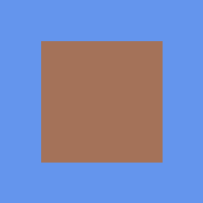
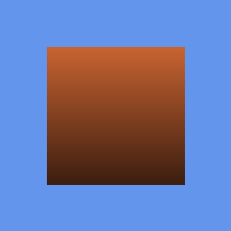

Tutorial 56: EnvironmentMapEffect for Reflections
What you’ll learn
- Assigning a
TextureCubetoEnvironmentMapEffect. - Tuning
FresnelFactor,EnvironmentMapAmountandEnvironmentMapSpecular. - Layering a reflection over a diffuse texture.
Before you start — Tutorial 36: Texturing 3D Models — and note the cubemap itself is covered in depth later, in Tutorial 64: Cubemaps and Skyboxes. Requires a 3D-capable backend such as EASYGL or VULKAN; the 2D-only backends (SDL_Renderer, DX3, ASCII, CANVAS) throw on 3D calls.
Cubemap-based reflection is a classic technique for making metallic, glass, or polished surfaces appear to reflect their surroundings. CNA's EnvironmentMapEffect is a built-in effect that layers a cubemap reflection on top of a diffuse texture, using the surface normal to compute a reflection vector in world space and sample the cubemap. The technique is fast, requires no ray tracing, and is supported on all shader-capable backends.
EnvironmentMapEffect Overview
EnvironmentMapEffect implements a per-vertex Phong lighting model combined with a cubemap reflection layer. In the vertex shader, the reflection direction is computed as the mirror of the view direction around the surface normal. This direction is passed to the fragment shader as a varying and used to index into the cubemap sampler. The result is then blended with the diffuse texture colour using the EnvironmentMapAmount scalar.
The effect supports one directional light (inherited from the built-in BasicEffect lighting model), ambient light, and an optional specular highlight that is added on top of the reflection. Fog is also supported for distance-based atmospheric fading.
A key limitation is that the cubemap is static — it does not dynamically reflect the current scene contents unless you re-render the cubemap each frame (see Tutorial 64 for dynamic cubemaps). For typical use cases such as car chrome, armour, or shiny floor surfaces, a static sky or pre-baked environment cubemap is entirely convincing.
TextureCube (Cubemap)
A TextureCube consists of six square faces arranged to form the sides of a cube centred at the world origin:
| Face index | Axis direction | Typical content |
|---|---|---|
| 0 (+X) | Right | Scene to the right of the capture point |
| 1 (-X) | Left | Scene to the left |
| 2 (+Y) | Up | Sky, ceiling |
| 3 (-Y) | Down | Ground, floor |
| 4 (+Z) | Forward | Scene in front |
| 5 (-Z) | Back | Scene behind |
In CNA, cubemaps are loaded via the content pipeline using getContentProperty().Load<TextureCube>. The type reader accepts exactly one format: a .dds file containing all six faces (or a .cnj envelope whose sourceFile points at one). There is no JSON descriptor for cubemaps, and no cross-layout or six-separate-files importer — pack the faces into a DDS with a tool such as texconv or NVIDIA Texture Tools before they reach the content directory.
// In code: load a cubemap from content pipeline
envMap_ = getContentProperty().Load<TextureCube>("skybox/env_cube");For hand-crafted cubemaps, tools like cmftStudio or Blender's panorama-to-cubemap baker can generate the six faces from an HDR equirectangular panorama; pack that output into a single DDS as the last step. Each face should be the same square resolution (128×128 for a simple skybox, 512×512 or higher for close-up reflections).
EnvironmentMap Property
Assign the TextureCube to the effect with setEnvironmentMapProperty():
envEffect_->setEnvironmentMapProperty(&*envMap_);The cubemap is bound to a samplerCube uniform inside the effect's GLSL shader. The sampler uses trilinear filtering with mipmaps by default. Ensure your cubemap carries mipmaps — CNA does not generate them for you here, since TextureCube is read straight out of the DDS. Generate the mip chain in the packing tool (texconv -m 0 builds a full chain) so the levels are already in the file. Without mipmaps, the reflection will appear aliased and noisy on surfaces that are at a sharp grazing angle.
FresnelFactor
The Fresnel effect describes a physical phenomenon: the reflectivity of a surface increases at grazing angles. A mirror-flat pond reflects almost perfectly when viewed at a low angle (horizon), but you can see through it clearly when looking straight down. setFresnelFactorProperty(float) controls how strongly this angle-dependent variation is applied:
- 0.0 — Fresnel disabled; the reflection is applied uniformly at all view angles with a strength equal to
EnvironmentMapAmount. - 1.0 — Full Fresnel: surfaces facing the camera are more diffuse, surfaces seen at grazing angles become more reflective.
- Values between 0 and 1 blend between the two extremes.
The internal formula (approximating the Schlick Fresnel) is:
float fresnelWeight = pow(1.0 - abs(dot(N, V)), u_fresnelFactor * 5.0);
float reflectWeight = u_envMapAmount + fresnelWeight * (1.0 - u_envMapAmount);For a metal surface, set FresnelFactor near 0 (metals reflect at all angles). For glass or water, set it near 1 (Fresnel-controlled reflectivity).
EnvironmentMapAmount
setEnvironmentMapAmountProperty(float) — a scalar in [0, 1] that sets the base blending weight between the diffuse texture and the cubemap reflection. At 0.0 the effect is purely diffuse. At 1.0 the object appears fully mirror-like (the diffuse texture is replaced by the reflection). Most materials look best in the 0.3–0.7 range:
envEffect_->setEnvironmentMapAmountProperty(0.5f); // 50/50 diffuse/reflection blendThe Fresnel factor modulates this amount per-fragment, so EnvironmentMapAmount acts as the base (face-on) reflection strength while Fresnel pushes grazing pixels higher.
EnvironmentMapSpecular
setEnvironmentMapSpecularProperty(Vector3) adds a specular highlight colour on top of the reflection. Unlike the cubemap reflection (which represents the mirror image of the environment), the specular highlight is a stylised Blinn-Phong lobe aimed at making the surface appear shiny under the directional light. Set it to Vector3::Zero to disable it, or to a low-intensity neutral colour for a polished-metal look:
// Subtle white specular for polished metal
envEffect_->setEnvironmentMapSpecularProperty(Vector3(0.25f, 0.25f, 0.25f));
// Gold-tinted specular for a golden armour effect
envEffect_->setEnvironmentMapSpecularProperty(Vector3(0.4f, 0.35f, 0.1f));The three cases side by side
These frames are from CNA's XNA oracle corpus (tools/xna-oracle/): output of the genuine Microsoft XNA 4.0 runtime, which CNA's D3D9 backend is diffed against at --tolerance 0. The same reflective quad is rendered three ways, isolating what each property contributes.

Baseline reflection — the cubemap blended in uniformly, no Fresnel, no specular. Real XNA 4.0 output; CNA matches it pixel-for-pixel.

FresnelFactor raised — reflectivity now varies with view angle across the face. Real XNA 4.0 output; CNA matches it pixel-for-pixel.
EnvironmentMapSpecular added — the highlight drives the surface to full white here. Real XNA 4.0 output; CNA matches it pixel-for-pixel.
Combining with Diffuse Texture
The diffuse texture set via setTextureProperty(Texture2D*) provides the base surface colour. In the fragment shader the effect computes:
vec4 diffuse = texture(u_diffuse, v_texcoord) * u_diffuseColor;
vec3 envSample = texture(u_envMap, v_reflectDir).rgb;
float reflWeight = /* Fresnel-modulated envMapAmount */;
vec3 color = mix(diffuse.rgb, envSample, reflWeight)
+ u_envMapSpecular * specularIntensity;
fragColor = vec4(color, diffuse.a);The alpha channel of the diffuse texture is preserved, so you can use semi-transparent cubemap-reflected objects (e.g., glass orbs) by enabling alpha blending alongside the effect.
Complete Example: Shiny Metallic Sphere
class ReflectGame final : public Game {
std::unique_ptr<EnvironmentMapEffect> envEffect_;
Texture2D diffuseTex_;
std::optional<TextureCube> envMap_;
std::unique_ptr<VertexBuffer> sphereVB_;
std::unique_ptr<IndexBuffer> sphereIB_;
int vertexCount_ = 0; // both set by BuildSphere()
int triCount_ = 0;
float rotation_ = 0.0f;
Camera camera_;
void LoadContent() override {
auto& gd = getGraphicsDeviceProperty();
diffuseTex_ = getContentProperty().Load<Texture2D>("textures/metal_scratched");
envMap_ = getContentProperty().Load<TextureCube>("skybox/env_cube");
envEffect_ = std::make_unique<EnvironmentMapEffect>(gd);
envEffect_->setTextureProperty(&diffuseTex_);
envEffect_->setEnvironmentMapProperty(&*envMap_);
// Reflection settings
envEffect_->setFresnelFactorProperty(0.5f);
envEffect_->setEnvironmentMapAmountProperty(0.6f);
envEffect_->setEnvironmentMapSpecularProperty(Vector3(0.3f, 0.3f, 0.3f));
// Lighting
envEffect_->setAmbientLightColorProperty(Vector3(0.2f, 0.2f, 0.25f));
envEffect_->DirectionalLight0.setEnabledProperty(true);
envEffect_->DirectionalLight0.setDirectionProperty(Vector3(0.5f, -1.0f, -0.5f));
envEffect_->DirectionalLight0.setDiffuseColorProperty(Vector3(1.0f, 0.95f, 0.85f));
// Generate a subdivided UV sphere
// BuildSphere fills sphereVB_/sphereIB_ and sets vertexCount_/triCount_;
// see Tutorial 51 for the mesh-generation mechanics.
BuildSphere(gd, 32, 32);
}
void Update(GameTime& gt) override {
rotation_ += (float)gt.getElapsedGameTimeProperty().getTotalSecondsProperty() * 0.4f;
}
void Draw(const GameTime&) override {
auto& gd = getGraphicsDeviceProperty();
gd.Clear(Color(20, 20, 30, 255));
Matrix world = Matrix::CreateRotationY(rotation_);
envEffect_->setWorldProperty(world);
envEffect_->setViewProperty(camera_.View());
envEffect_->setProjectionProperty(camera_.Projection());
gd.SetVertexBuffer(sphereVB_.get());
gd.SetIndexBuffer(sphereIB_.get());
for (auto& pass : envEffect_->getCurrentTechniqueProperty()->getPassesProperty()) {
pass.Apply();
gd.DrawIndexedPrimitives(
PrimitiveType::TriangleList,
0, 0, vertexCount_, 0, triCount_);
}
gd.Present();
}
};Static cubemap: The environment cubemap used by EnvironmentMapEffect is pre-baked and does not update as the scene changes at runtime. Dynamic objects and moving lights will not appear in the reflection. For dynamic reflections, see Tutorial 64 (Cubemaps and Skyboxes) for the technique of rendering a live cubemap each frame.